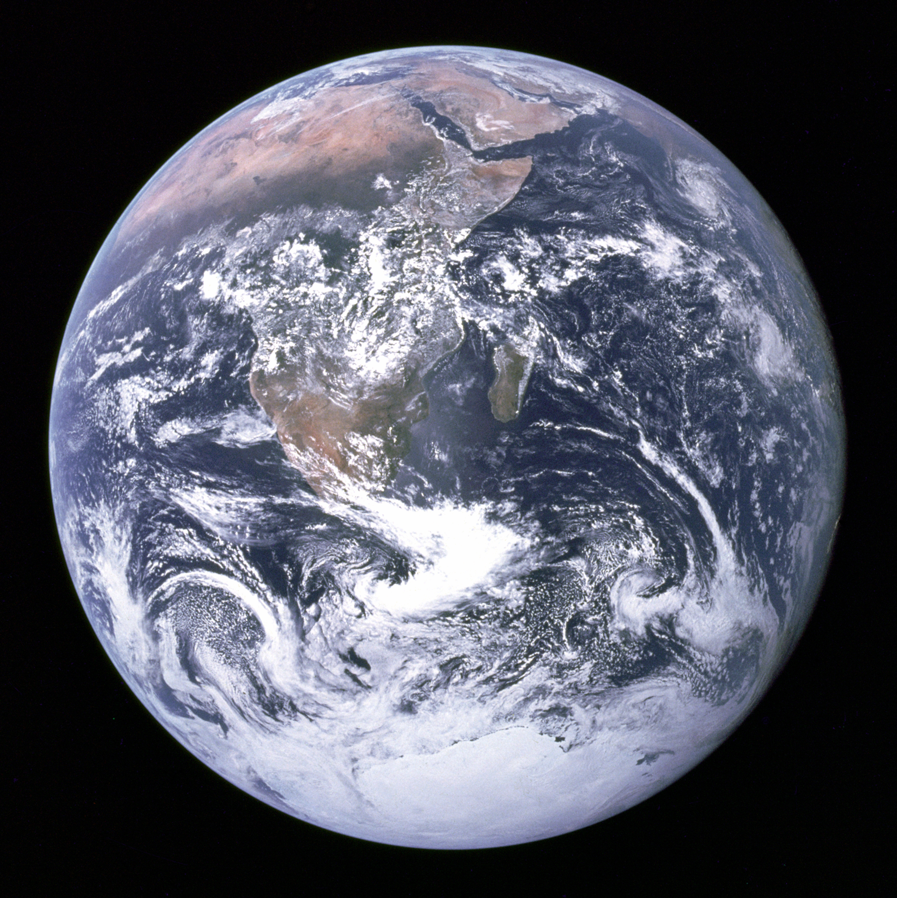

Texto
La Tierra - El Planeta Azul

| La Tierra - El Planeta Azul |
| Superficie El 71% está cubierto por océanos de agua salada. Densidad Es el cuerpo más denso de todo el Sistema Solar (5.51 g/cm³). Atmósfera Protectora, compuesta de 78% Nitrógeno y 21% Oxígeno. Lunas Una (1), que controla nuestras mareas. |
🔭 DESCRIPCIÓN
Único planeta con placas tectónicas activas y agua líquida en superficie. Su atmósfera (N₂ 78% y O₂ 21%) y campo magnético protegen toda forma de vida.
El 71% de su superficie está cubierta por agua líquida. La capa de ozono protege de la radiación UV del Sol.
Rasgo visual: Azul por los océanos, verde-marrón por los continentes, blanco por las nubes y casquetes polares.
⭐ DATO CURIOSO
Es el planeta rocoso más denso: 5.51 g/cm³, por su núcleo interno de hierro sólido rodeado por un núcleo externo de hierro líquido.
La Luna estabiliza el eje de rotación de la Tierra (23.5°), manteniendo las estaciones regulares. Sin ella, el eje oscilaría caóticamente.